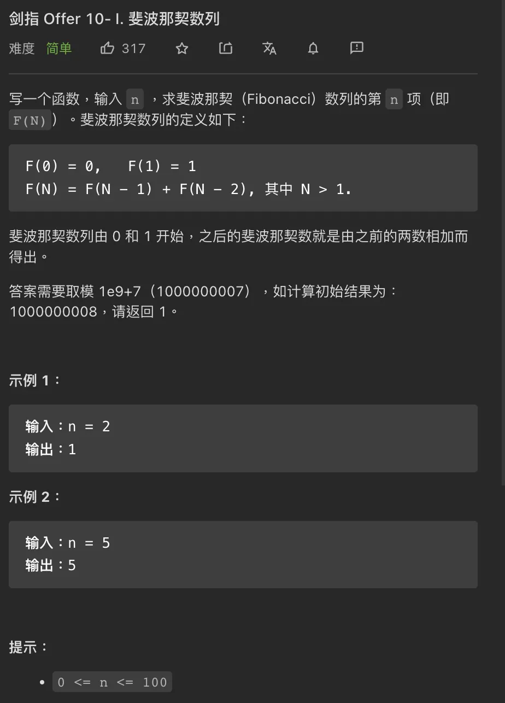
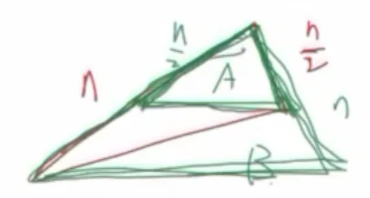

剑指 Offer 10- I. 斐波那契数列
Question

✍🏽 My Solution
Solution #1 [遞歸備忘錄]
执行用时：0 ms, 在所有 Java 提交中击败了100.00%的用户
内存消耗：38 MB, 在所有 Java 提交中击败了50.36%的用户
class Solution {
private int[] mem;
private int mod = 1000000007;
public int fib(int n) {
mem = new int[n+1];
return fib_r(n);
}
private int fib_r(int n) {
if (n == 0) return 0;
if (n == 1) return 1;
if (mem[n] != 0) return mem[n];
mem[n] = (fib_r(n-1) + fib_r(n-2))%mod;
return mem[n];
}
}
Explanation (in my words)
-
How does their solution work?
遞歸每個函數，每次計算到新的節點，存進備忘錄，下一次直接使用
-
What is the space/time complexity of their solution?
- time:
- 求遞歸樹節點個數，只需要2n，故為O(n)
- space: O(n)
- 求遞歸樹高度(深度)
- $O(n)$
- time:
Solution #2 [Recursion]
执行用时：超時
class Solution {
private int mod = 1000000007;
public int fib(int n) {
if (n == 0) return 0;
if (n == 1) return 1;
return (fib(n-1) + fib(n-2))%mod;
}
}
Explanation (in my words)
-
How does their solution work?
遞歸運算求解
-
為什麼 n = 43 會超時
- 先舉例一個滿二叉樹，高度為 $h$，節點個數為 $1+2^1+2^2+2^3+....+2^(h-1)$ $=$ $2^h-1$
- 求節點個數可以求一個範圍就好，可以得知最長路徑是 n，最短路徑是 $n/2$
- 故套路滿二叉樹公式，時間複雜度就介於$O(n/2)$ < k < $O(2^n)$ 之間
- $2^(21.5)$ ~ 2 ^43 取中間值大概為2^30，為$10^9$（10億)，10億的函數調用才能得到結果，故肯定會超時

-
What is the space/time complexity of their solution?
- time:
- 求遞歸樹節點個數
- $O(n/2)$ < k < $O(2^n)$
- space: O(n)
- 求遞歸樹高度
- $O(n)$
- time: